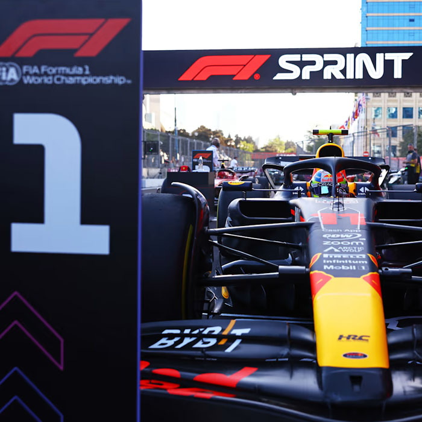

Фритрек и нулевой спринт: Подготовка к работе

</HTML>
Это было самое начало пути. На этом этапе важно было проникнуться основами и настроиться на учёбу. И, возможно, подумать, как новые знания могут повлиять на ваше будущее.
Было трудно себя заставить после долгого перерыва в учебе, жить по графику где есть учеба и втоже время волнительно, когда понимаешь что будешь изучать что-то новое.